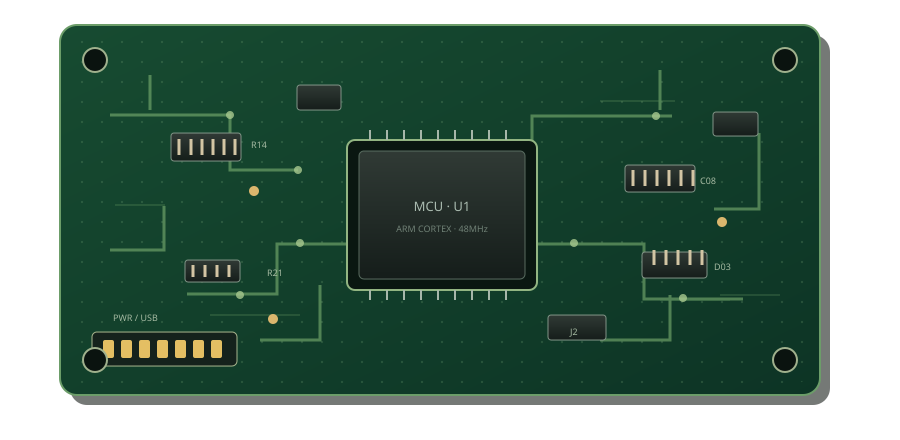

Board overview AWAITING REFERENCE

LOAD A CLEAN PCB DESIGN AND A TEST DESIGN
1920 × 1080 pxModel v2.4.1
Defect regionConfidence ≥ 80%
Compare manufacturing Gerber geometry and locate changed copper features in millimetres.

Findings compare copper geometry against the clean Gerber. Added bridges are flagged as potential shorts; confirm electrical nets and fabrication rules in your EDA tool.
For a package, include the front copper layer named F_Cu, Top Copper, or .GTL. Single copper Gerber files can be loaded directly. Other layers are retained in the package but not compared.
Gerber copper artwork is compared directly and findings map back to board coordinates.